Active Members
-
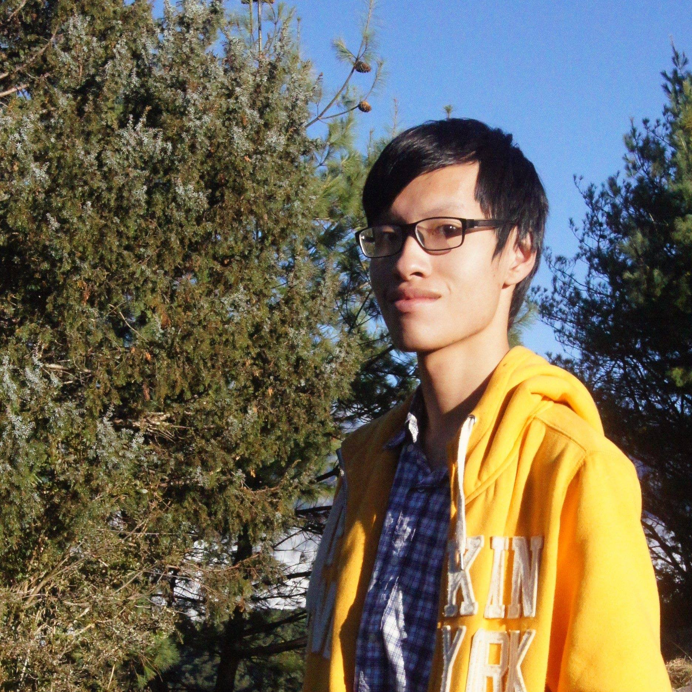
Lin Yen-Hsing
Master student, NTHU IoA
-
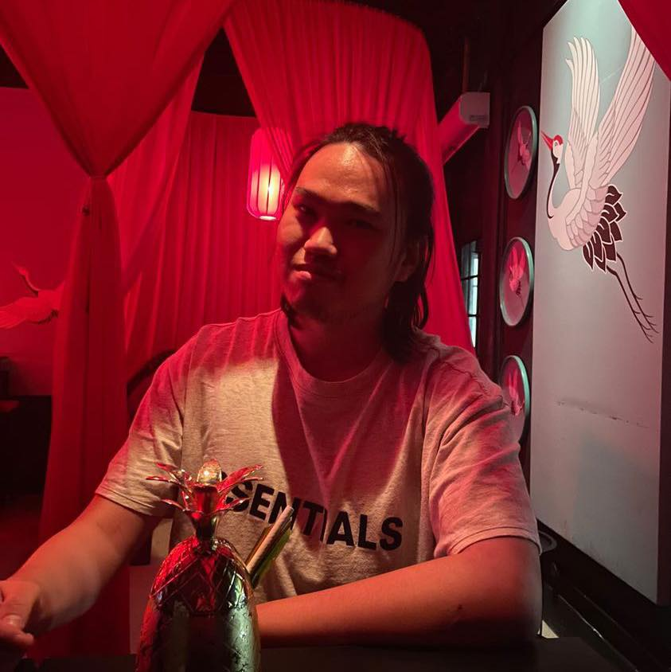
Yap Yong Sheng
Undergraduate student
NTHU Phys. -
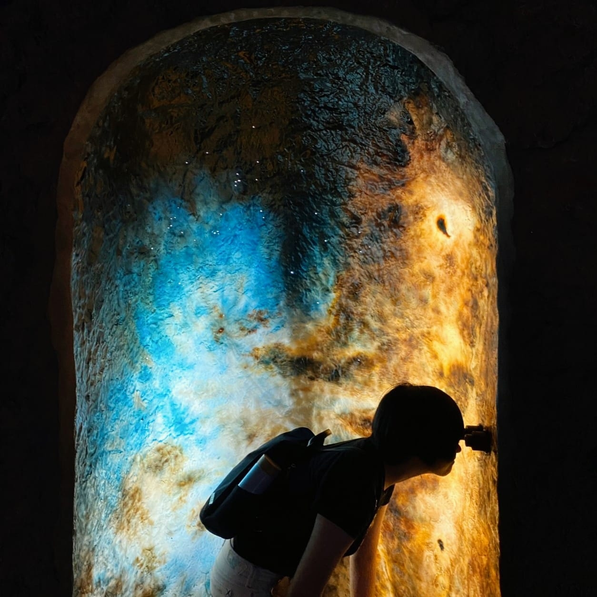
Pu Sy-Yun
Undergraduate student
NTHU Phys. -
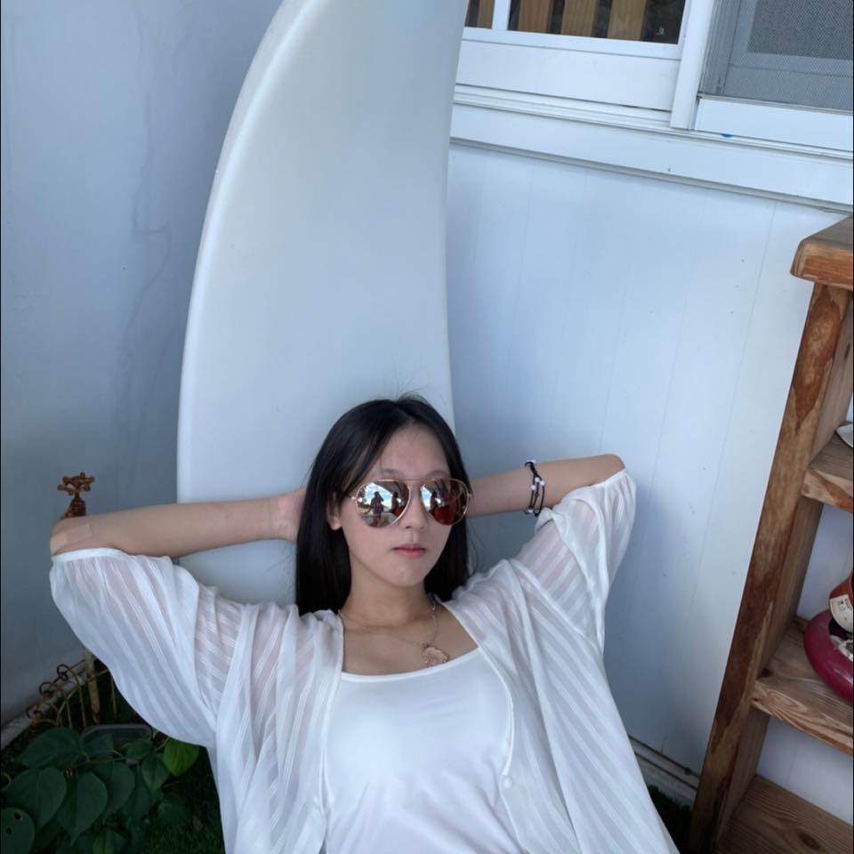
Ho Zi-Hua
Undergraduate student
NTHU Phys. -
Tseng Yung-Hsuan
Undergraduate student
NTHU Phys. -
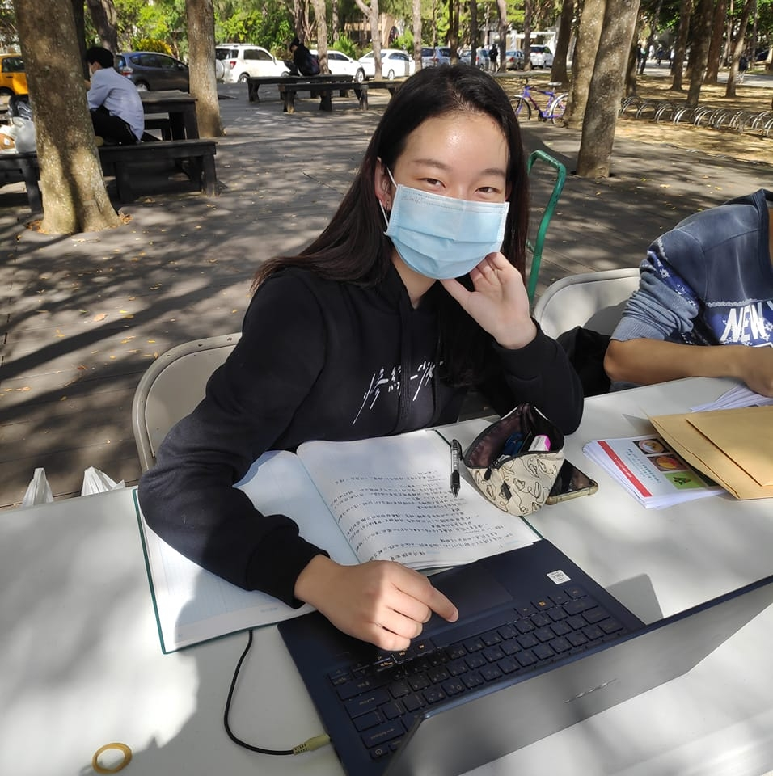
Jo-Shui Kao
Undergraduate student
NTHU Phys. -
Li Wei-Wen
Undergraduate student
NTHU EE&CS. -
Hsieh Mu-Chen
Undergraduate student
NTHU MSE.
5th AstroRead (2022.09 - 2023.06)
Host: Sy-Yun Pu、謝沐辰、李維文
| Date | Topic | Speaker | Notes |
|---|---|---|---|
| 2022.10.04 | Observation I | Yen-Hsing Lin | Basics of observational astronomy, photometry |
| 2022.10.11 | Observation II | Yap Yong Sheng | Spectroscopy |
| 2022.10.18 | Radiative transfer | Zi-Hua Ho | |
| 2022.10.25 | Interstellar medium | Chiung-Yin Chang | |
| 2022.11.01 | Star formation | Jo-Shui Kao | |
| 2022.11.15 | Stellar evolution | 李維文 | |
| 2022.11.22 | Solar System | 羅芝瓴 | |
| 2022.11.23 | Student Seminar: Distant Galaxies with JWST | Hsiao, Tiger (JHU PhD student) | |
| 2022.11.29 | Orbital mechanics | Yen-Hsing Lin | |
| 2022.12.06 | Black holes | Zi-Hua Ho | |
| 2022.12.13 | Dark matter | Yap Yong Sheng | Axion and WIMPs |
| 2022.12.15 | Star clusters | 謝沐辰 | |
| 2022.12.20 | Galaxy formation (from star to galaxy) | Sy-Yun Pu |
Gravitational Wave Book Club (2022.07 - 2022.08)
Host: Yap Yong Sheng
| Date | Topic | Speaker | Notes |
|---|---|---|---|
| 2022.07.06 | General Relativity Crash Course | Yap Yong Sheng | Equivalence Principle, Metric Tensor, Geodesic Equation, Curvature & Parallel Transport, Einstein Field Equations |
| 2022.07.13 | Introduction to Gravitational Waves | Yung-Hsuan Tseng | Weak Field Approximation, Traceless-Transverse Gauge, GW Polarizations |
| 2022.07.27 | GW Detection | Yap Yong Sheng | Quadrupole Radiation, Luminosity and Strain Amplitudes of Binary Inspirals, Strain Measurements in Michelson Interferometers |
2022 Student Seminar Series (2022.06 - 2022.07)
Host: Sy-Yun Pu, Zheng-Xian Hsu
| Date | Topic | Speaker | Notes |
|---|---|---|---|
| 2022.06.14 | How does ISM model affect galaxy SEDs? | Yen-Hsing Lin, Cheng-Yu Chuang | Dust, radiative transfer, SED fitting |
| 2022.06.14 | Understanding AGN and non-AGN host galaxies by analyzing galaxy star formation history | Sy-Yun Pu | AGN, galaxy properties, SED fitting, SFH |
| 2022.06.21 | Physical principles in observational astronomy | Yen-Hsing Lin | Telescopes, intensity, spectrum |
| 2022.06.21 | Understand galaxy evolution in the early universe with OST survey | Sy-Yun Pu | Submm galaxies, mixed galaxy population, Origins Space Telescope |
| 2022.06.28 | From cosmology to galaxies | Sy-Yun Pu | Halo formation, Galaxy formation |
| 2022.07.05 | Direct detection of WIMP dark matter with XENON1T | Yap Yong Sheng | Thermal history of WIMPs, DM direct detection, astroparticles |
| 2022.07.05 | Learn Physics from Graph Neural Networks | Cheng-Yu Chuang | Basics of Neural Networks, Graphs, Sparse regression |
| 2022.07.12 | Unveiling the nature of AGN bubbles with Lynx X-ray observatory | Yen-Hsing Lin | X-ray Astronomy, Lynx, AGN |
4th AstroRead (2021.09 - 2022.06)
Host: Zheng-Xian Hsu, Sy-Yun Pu
| Date | Topic | Speaker | Notes |
|---|---|---|---|
| 2021.10.12 | Gathering Party | Zheng-Xian Hsu, Sy-Yun Pu | Introduction to AstroRead: content and history |
| 2021.10.19 | Coordinates | Sy-Yun Pu | |
| 2021.10.26 | Guest lecture: Observation | Yuan-Ming Hsu (Host of NTU astronomy club astrophysics study group) | |
| 2021.11.02 | Special and General Relativity | Yen-Hsing Lin | |
| 2021.11.09 | Cosmological Models | Yen-Hsing Lin | |
| 2021.11.16 | Discussion: Astro2020 | Yen-Hsing Lin | Introducing the recently published Astro2020 Report |
| 2021.11.23 | Thermal History of the Universe | Chen-Yu Chuang | |
| 2021.11.30 | Galaxy Formation | Zheng-Xian Hsu | |
| 2021.12.07 | Galaxy Clusters | Jo-Shui Kao | |
| 2021.12.14 | Star Formation | Yung-Hsuan Tseng | |
| 2021.12.20 | Compact Objects | Yap Yong Sheng | |
| 2021.12.21 | Informal Gathering: Some recent news in astrophysics | Yen-Hsing Lin | Introducing 3 papers related to planet formation and GRAVITY result on orbital precession of star near Sgr A* |
| 2021.12.28 | Astrophysical Black Holes | Yen-Hsing Lin | |
| 2022.01.17 | Student Seminar: Life in Yale and PhD application | Chenghan Hsieh (Yale PhD Student) | |
| 2022.02.22 | Radiative Transfer | Yen-Hsing Lin | |
| 2022.03.01 | Interstellar Medium | Zheng-Xian Hsu | |
| 2022.03.08 | Astrophysical Fluid Dynamics | Yap Yong Sheng | |
| 2022.03.15 | Stellar Systems | Jo-Shui Kao | Star clusters and Variable stars |
| 2022.03.22 | Planetary Systems and Exoplanets | Sy-Yun Pu | |
| 2022.03.29 | Active Galactic Nuclei | Yung-Hsuan Tseng | |
| 2022.04.05 | Student Seminar: Surviving Companions of Supernovae | Hsin-Pei Chen | |
| 2022.04.12 | Time Domain Astronomy | Zi-Hua Ho | |
| 2022.04.19 | Astronomy News Report | Sy-Yun Pu, Zi-Hua Ho, Yung-Hsuan Tseng | |
| 2022.04.26 | Exotic Messengers / Astroparticles | Yap Yong Sheng |
3rd AstroRead (2020.09 - 2021.06)
Host: Chiung-Yin Chang, Yap Yong Sheng
| Date | Topic | Speaker | Notes |
|---|---|---|---|
| 2020.09.29 | Gathering Party | Chiung-Yin Chang | Introduction to AstroRead: content and history |
| 2020.09.29 | Fundamentals | Shang-Ching Lin | |
| 2020.10.13 | Radiative Transfer I | Chiung-Yin Chang | |
| 2020.10.20 | Radiative Transfer II | Yap Yong Sheng | Line transfer |
| 2020.10.27 | Stellar Evolution I | Ming-Hsueh Hsieh | |
| 2020.11.17 | Stellar Evolution II | Yap Yong Sheng | |
| 2020.11.24 | Interstellar medium | Yen-Hsing Lin | |
| 2020.12.01 | Planetary System | Chiung-Yin Chang | |
| 2020.12.22 | Student Seminar | Hsin-Pei Chen, Yen-Hsing Lin | Radio astronomy and Dust Evolution |
| 2021.03.16 | General Relativity | Yap Yong Sheng | |
| 2021.03.23 | Cosmological Models | Zheng-Xian Hsu | |
| 2021.03.30 | Thermal History of the universe | Yap Yong Sheng | |
| 2021.04.06 | Python and Linux | Yen-Hsing Lin | |
| 2021.04.20 | Structure and Galaxy Formation | Chiung-Yin Chang | |
| 2021.04.27 | Galaxy Formation (Theory) | Yen-Hsing Lin | |
| 2021.05.04 | Galaxy Formation (Observation) | Yen-Hsing Lin | |
| 2021.05.18 | Galaxy Cluster | Zheng-Xian Hsu | |
| 2021.05.25 | Our Milky Way | Yap Yong Sheng | |
| 2021.05.11 | Student Seminar: Geometry effect on dust attenuation curves with different grain sources at high redshift | Yen-Hsing Lin |
2nd AstroRead (2019.09 - 2020.06)
Host: Yen-Hsing Lin
| Date | Topic | Speaker | Notes |
|---|---|---|---|
| 2019.09.24 | Gathering Party | Yen-Hsing Lin | Introduction to AstroRead: content and history |
| 2019.10.01 | The Cosmic Distance Scale | Yen-Hsing Lin | |
| 2019.10.08 | Gravity | Yen-Hsing Lin | |
| 2019.10.15 | Random Processes I | Yi-Chen Wang | |
| 2019.10.22 | Random Processes II | 楊宗仁 | |
| 2019.10.29 | Special Relativity I | Yen-Hsing Lin | |
| 2019.11.05 | Special Relativity II | 王立宇 | |
| 2019.11.12 | Electromagnetism I | Yu-Hsiu Huang | |
| 2019.11.19 | Electromagnetism II | Yu-Hsiu Huang | |
| 2019.11.26 | Quantum Process | 楊宗仁 | |
| 2019.12.03 | Linux and Python | 蘇彥碩 | |
| 2020.03.03 | Gathering party: ALMA-T and SSP | Hsin-Pei Chen, Yen-Hsing Lin | An introduction to Taiwan's astrophysics summer schools. |
| 2020.03.10 | Stars I | Yen-Hsing Lin | |
| 2020.03.17 | Stars II: Compact Stars | Chung-Ming Chen | |
| 2020.03.17 | Gas | Yu-Hsiu Huang | |
| 2020.03.24 | Dust | Yen-Hsing Lin | |
| 2020.03.31 | Dust | Yen-Hsing Lin | |
| 2020.04.07 | Cosmology I | Chiung-Yin Chang | |
| 2020.04.14 | Cosmology II | Yu-Hsiu Huang | |
| 2020.04.21 | Python: Errors | Yen-Hsing Lin | |
| 2020.05.05 | Python: Simple Simulation | Yi-Chen Wang |
1st AstroRead (2018.09 - 2019.06)
Host: Yen-Hsing Lin
| Date | Topic | Speaker | Notes |
|---|---|---|---|
| 2018.10.04 | Gathering Party | Yen-Hsing Lin | Introduction to AstroRead: content and history |
| 2018.10.11 | Observation and Instruments | 王立宇 | |
| 2018.10.18 | Stellar Spectra | Chiung-Yin Chang | |
| 2018.10.25 | Celestial Mechanisms | Yen-Hsing Lin | |
| 2018.11.01 | Photometric | Chung-Ming Chen | |
| 2018.11.08 | Stellar Structure and Fusion | 鄭冠群 | |
| 2018.11.15 | Stellar Evolution I | Jacob Chiu | |
| 2018.11.22 | Stellar Evolution II | 林宏修 | |
| 2018.11.29 | Sun | Yi-Chen Wang | |
| 2018.12.06 | Variable Stars and Compact stars | Yu-Hsiu Haung | |
| 2019.03.11 | Gathering Party | Yu-Hsiu Haung | |
| 2019.04.01 | ISM and star clusters | Chun-Ching Chen | |
| 2019.04.08 | Galaxies I | 劉柏康、Chung-Ming Chen | |
| 2019.04.15 | Galaxies II | Yu-Hsiu Huang | |
| 2019.04.22 | Cosmology | Chiung-Yin Chang | |
| 2019.04.29 | Python: Common commands | Yi-Chen Wang | |
| 2019.05.06 | Python: Packages and how to deal with bugs | Jacob Chiu | |
| 2019.05.13 | Python: Image Processing | Yen-Hsing Lin | |
| 2019.05.20 | Paper Reading | Jacob Chiu |
Previous Members
-
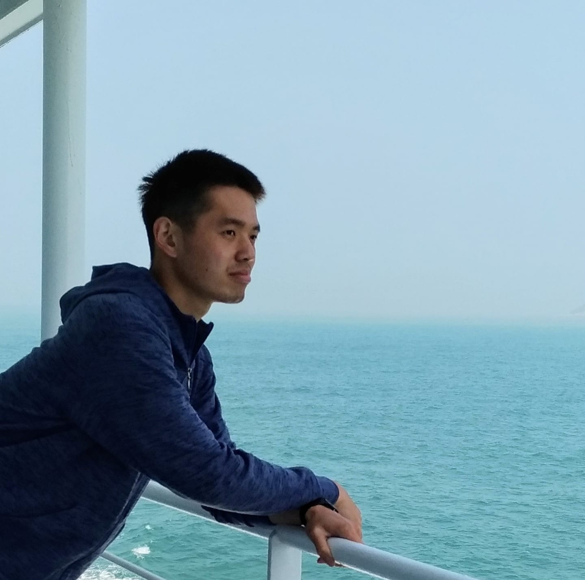
Jacob Chiu
Master
NTHU IoA -
Yu-Hsiu Huang
PhD student
U.A. Astronomy. -
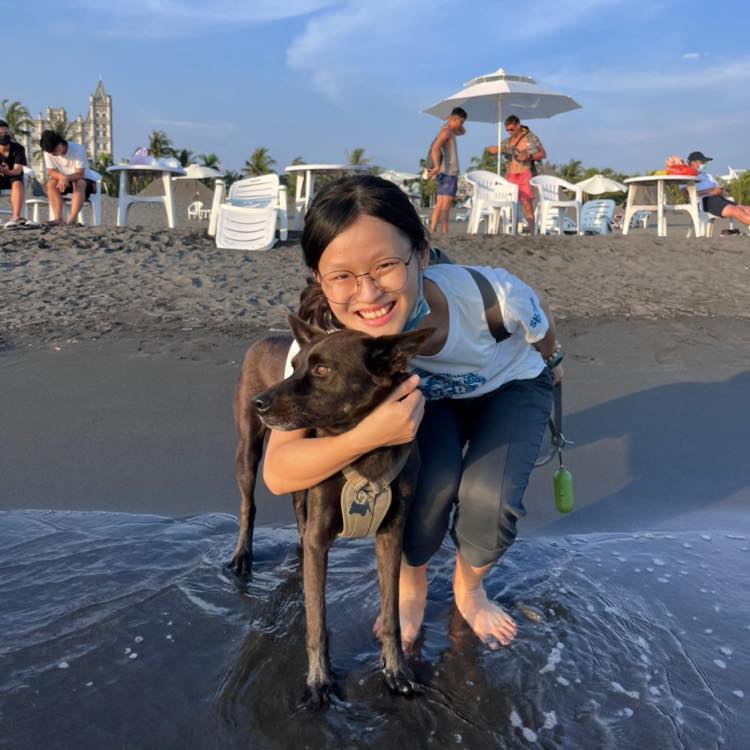
Hsin-Pei Chen
Master student
NTHU IoA -
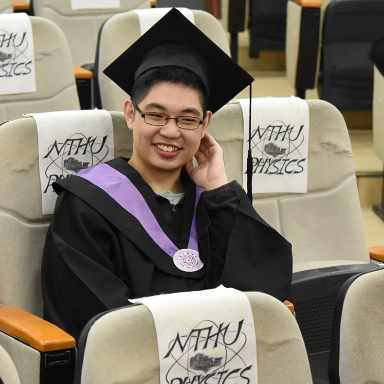
Yi-Chen Wang
Master
NTHU Phys. -
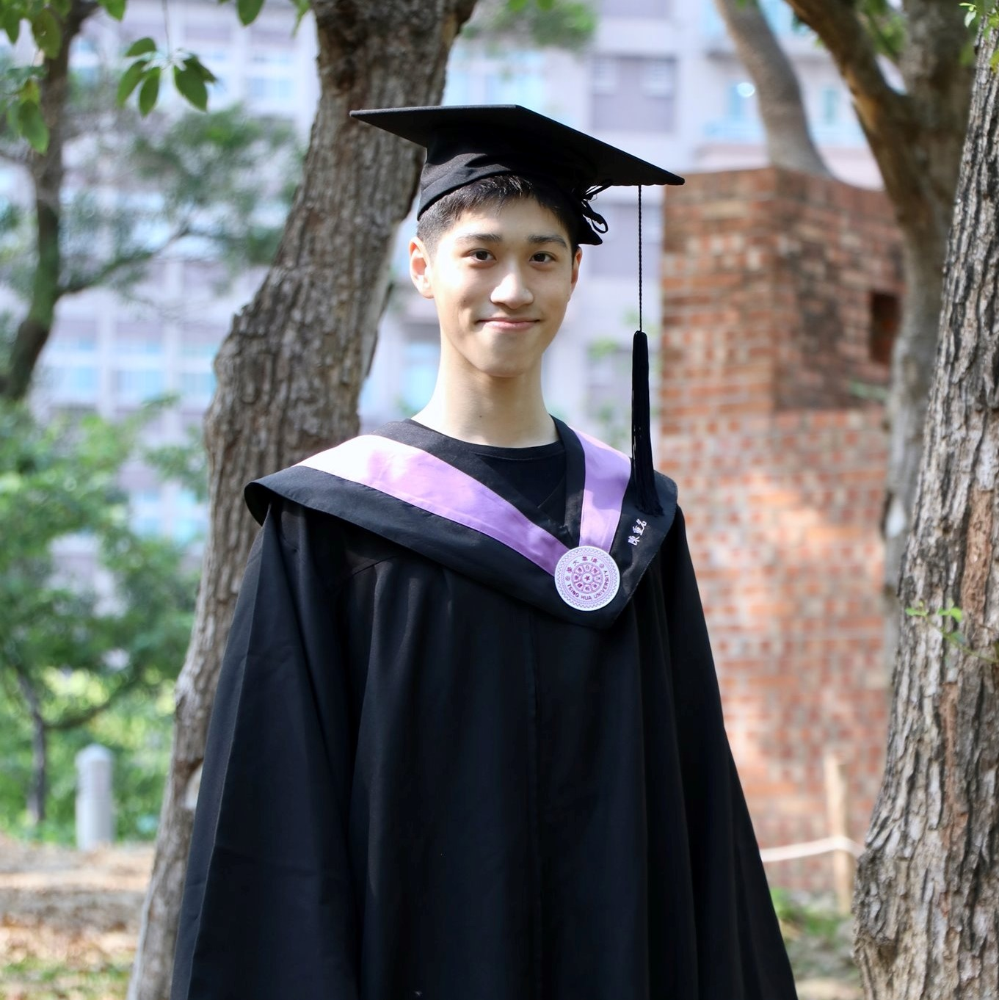
Chung-Ming Chen
Master student
NTU Phys. -
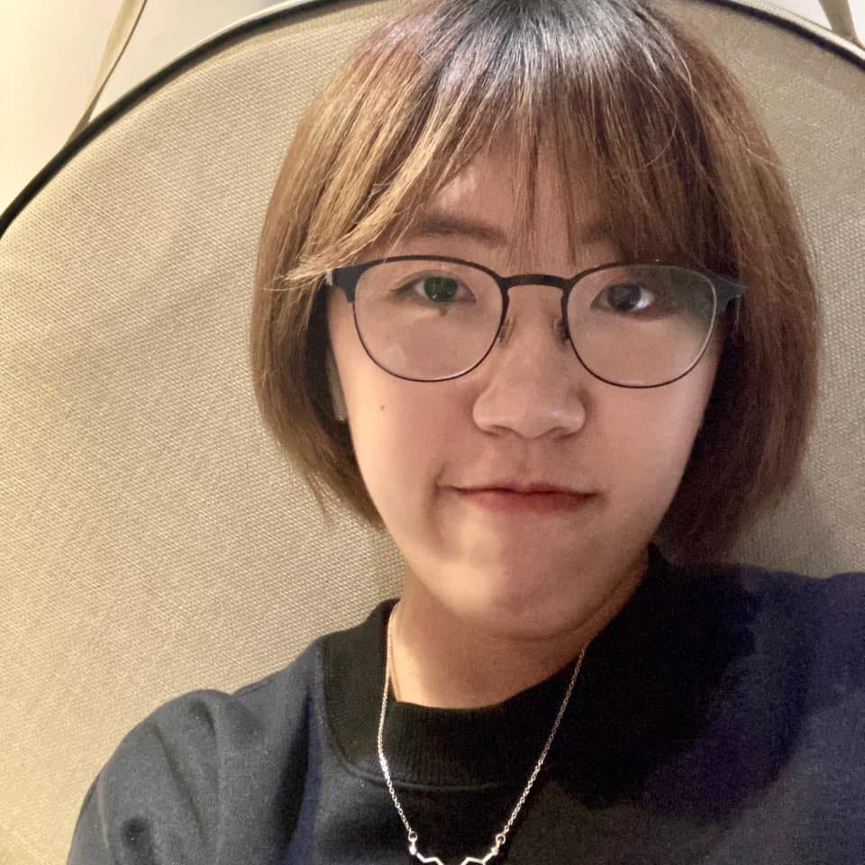
Chiung-Yin Chang
Undergraduate student
London Uni. CS. -
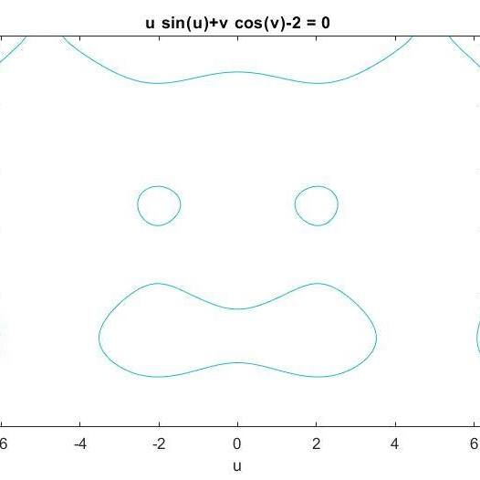
Zheng-Xian Hsu
Undergraduate student
NTHU Phys.
Participants (incomplete)
5th: Hong-Wen Liu (NTHU Phys), 鄭亦家 (NTHU MSE), 謝承安 (HCHS/IESO), Fiona Lo,
4th: Fiona Lo, 李宜舫, Ping-yu Chou, 李啟維, 林雅苓,
3th: Shang-Ching Lin, 謝明學, 張宸勻, 黃千祐, 林雅苓
2nd: Shang-Ching Lin, 謝明學, 吳家頡
1st: 楊宗仁、劉柏康、張鈞諺、陳駿青